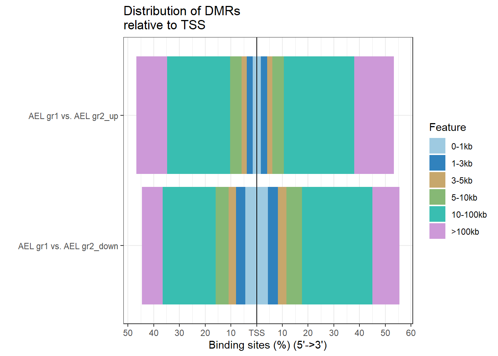
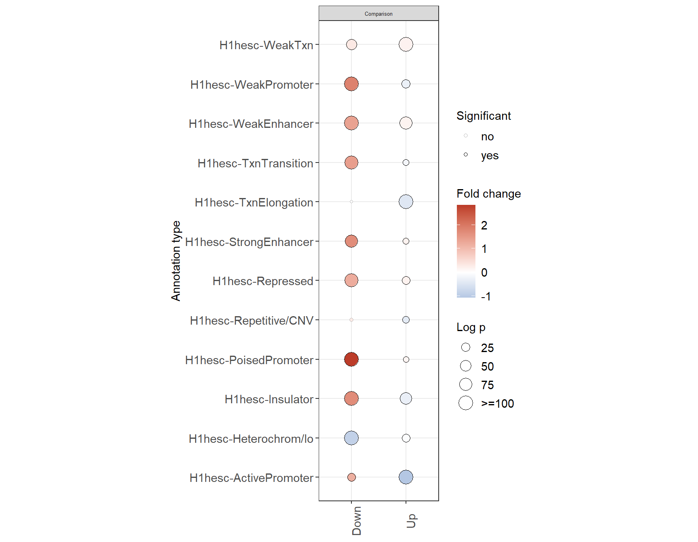

Last updated: 2023-06-16
Checks: 7 0
Knit directory: 22_AEL/
This reproducible R Markdown analysis was created with workflowr (version 1.7.0.4). The Checks tab describes the reproducibility checks that were applied when the results were created. The Past versions tab lists the development history.
Great! Since the R Markdown file has been committed to the Git repository, you know the exact version of the code that produced these results.
Great job! The global environment was empty. Objects defined in the global environment can affect the analysis in your R Markdown file in unknown ways. For reproduciblity it’s best to always run the code in an empty environment.
The command set.seed(20230201) was run prior to running
the code in the R Markdown file. Setting a seed ensures that any results
that rely on randomness, e.g. subsampling or permutations, are
reproducible.
Great job! Recording the operating system, R version, and package versions is critical for reproducibility.
Nice! There were no cached chunks for this analysis, so you can be confident that you successfully produced the results during this run.
Great job! Using relative paths to the files within your workflowr project makes it easier to run your code on other machines.
Great! You are using Git for version control. Tracking code development and connecting the code version to the results is critical for reproducibility.
The results in this page were generated with repository version 83a5ebf. See the Past versions tab to see a history of the changes made to the R Markdown and HTML files.
Note that you need to be careful to ensure that all relevant files for
the analysis have been committed to Git prior to generating the results
(you can use wflow_publish or
wflow_git_commit). workflowr only checks the R Markdown
file, but you know if there are other scripts or data files that it
depends on. Below is the status of the Git repository when the results
were generated:
Ignored files:
Ignored: .Rhistory
Ignored: .Rproj.user/
Ignored: refdir/
Untracked files:
Untracked: analysis/3_combine_meth_ge_mofa.Rmd
Untracked: analysis/DMR_report_illumina.Rmd
Untracked: analysis/candidate_genes.Rmd
Untracked: analysis/enhancer_gene_pairs.Rmd
Untracked: analysis/epiCMIT_score.Rmd
Untracked: analysis/homer_all.Rmd
Untracked: analysis/homer_results_promoter.Rmd
Untracked: analysis/inital_analysis.Rmd
Untracked: analysis/prepare_homer.Rmd
Untracked: analysis/test.Rmd
Untracked: code/dataETOC2.Rd
Untracked: code/support_functions.R
Untracked: data/AEL_gr1_vs._AEL_gr2_down.txt
Untracked: data/AEL_gr1_vs._AEL_gr2_up.txt
Untracked: data/AEL_subgroup_dmr.bedGraph
Untracked: data/CMP_vs._all_in_normal_down.txt
Untracked: data/CMP_vs._all_in_normal_up.txt
Untracked: data/CMP_vs._all_in_tumor_down.txt
Untracked: data/CMP_vs._all_in_tumor_up.txt
Untracked: data/DML_tests.RDS
Untracked: data/GSE63409_sample_sheet.txt
Untracked: data/HSC_vs._all_in_normal_down.txt
Untracked: data/HSC_vs._all_in_normal_up.txt
Untracked: data/HSC_vs._all_in_tumor_down.txt
Untracked: data/HSC_vs._all_in_tumor_up.txt
Untracked: data/MPP_vs._all_in_normal_down.txt
Untracked: data/MPP_vs._all_in_normal_up.txt
Untracked: data/MPP_vs._all_in_tumor_down.txt
Untracked: data/MPP_vs._all_in_tumor_up.txt
Untracked: data/bigWigs_2023/
Untracked: data/deseq.RDS
Untracked: data/dmls_single.RDS
Untracked: data/dmls_single_15_06.RDS
Untracked: data/dmr_beds/
Untracked: data/dmr_beds_enhancer/
Untracked: data/dmr_beds_promoter/
Untracked: data/dmrs_single.RDS
Untracked: data/dmrs_single_15_06.RDS
Untracked: data/gene_count_matrix.csv
Untracked: data/gene_expression_mat.txt
Untracked: data/homer_results_merged.RDS
Untracked: data/motif_enrichment_AEL_subgroups.RDS
Untracked: data/mutations.txt
Untracked: data/ncomms9489-s3.xlsx
Untracked: data/ncomms9489-s7.xlsx
Untracked: data/no_snps_methrix_2023.RDS
Untracked: data/pcbc-stemsig.p219.Rda
Untracked: data/processed_rnbset_GSE63409.RDS
Untracked: data/raw_methrix_2023.RDS
Untracked: data/samples_stringtie.txt
Untracked: data/stringtie/
Untracked: data/transcript_count_matrix.csv
Untracked: data/tumor_vs._all_in_normal_down.txt
Untracked: data/tumor_vs._all_in_normal_up.txt
Untracked: data/tumor_vs._normal_in_CMP_cells_down.txt
Untracked: data/tumor_vs._normal_in_CMP_cells_up.txt
Untracked: data/tumor_vs._normal_in_HSC_cells_down.txt
Untracked: data/tumor_vs._normal_in_HSC_cells_up.txt
Untracked: data/tumor_vs._normal_in_MPP_cells_down.txt
Untracked: data/tumor_vs._normal_in_MPP_cells_up.txt
Untracked: dataCMP_vs._all_in_normal_down.txt
Untracked: dataCMP_vs._all_in_normal_up.txt
Untracked: dataCMP_vs._all_in_tumor_down.txt
Untracked: dataCMP_vs._all_in_tumor_up.txt
Untracked: dataHSC_vs._all_in_normal_down.txt
Untracked: dataHSC_vs._all_in_normal_up.txt
Untracked: dataHSC_vs._all_in_tumor_down.txt
Untracked: dataHSC_vs._all_in_tumor_up.txt
Untracked: dataMPP_vs._all_in_normal_down.txt
Untracked: dataMPP_vs._all_in_normal_up.txt
Untracked: dataMPP_vs._all_in_tumor_down.txt
Untracked: dataMPP_vs._all_in_tumor_up.txt
Untracked: datatumor_vs._normal_in_CMP_cells_down.txt
Untracked: datatumor_vs._normal_in_CMP_cells_up.txt
Untracked: datatumor_vs._normal_in_HSC_cells_down.txt
Untracked: datatumor_vs._normal_in_HSC_cells_up.txt
Untracked: datatumor_vs._normal_in_MPP_cells_down.txt
Untracked: datatumor_vs._normal_in_MPP_cells_up.txt
Untracked: omnipathr-log/
Untracked: output/filtered/
Untracked: output/filtered_MC_per_chr.tsv
Untracked: output/filtered_contig_lens.tsv
Untracked: output/filtered_global_MC_per_samp.tsv
Untracked: output/filtered_methrix_reports.html
Untracked: output/filtered_n_covered_by_all_samples.tsv
Untracked: output/filtered_n_covered_per_chr.tsv
Untracked: output/raw/
Untracked: output/raw_MC_per_chr.tsv
Untracked: output/raw_contig_lens.tsv
Untracked: output/raw_global_MC_per_samp.tsv
Untracked: output/raw_methrix_reports.html
Untracked: output/raw_n_covered_by_all_samples.tsv
Untracked: output/raw_n_covered_per_chr.tsv
Untracked: output/res_enhancer/
Unstaged changes:
Modified: analysis/DMR_calling.Rmd
Modified: analysis/DMR_report.Rmd
Note that any generated files, e.g. HTML, png, CSS, etc., are not included in this status report because it is ok for generated content to have uncommitted changes.
These are the previous versions of the repository in which changes were
made to the R Markdown
(analysis/DMR_report_AEL_subgroups.Rmd) and HTML
(docs/DMR_report_AEL_subgroups.html) files. If you’ve
configured a remote Git repository (see ?wflow_git_remote),
click on the hyperlinks in the table below to view the files as they
were in that past version.
| File | Version | Author | Date | Message |
|---|---|---|---|---|
| Rmd | 83a5ebf | tkik | 2023-06-16 | wflow_publish(c("analysis/DMR_report_AEL_subgroups.Rmd", "analysis/differential_AML.Rmd")) |
#Genome of your preference to work with
if (!requireNamespace("BiocManager", quietly = TRUE))
install.packages("BiocManager")
library(BiocManager)
if(!requireNamespace("BSgenome.Hsapiens.UCSC.hg19")) {
BiocManager::install("BSgenome.Hsapiens.UCSC.hg19")
}
library(BSgenome.Hsapiens.UCSC.hg19)
library(annotatr)
library(ComplexHeatmap)
library(ChIPseeker)
library(TxDb.Hsapiens.UCSC.hg19.knownGene)
library(clusterProfiler)meth <- readRDS(file.path("data", "no_snps_methrix_2023.RDS"))
meth@colData <- meth@colData[,-grep("X", colnames(meth@colData))]
meth@colData$Cell.Type <- gsub(" \\(.*\\)", "", meth@colData$Cell.Type)
meth@colData$Group <- as.character(meth@colData$Group)
meth@colData$Group[meth@colData$Group==""] <- "Normal"
meth@colData$Cell.Type[is.na(meth@colData$Cell.Type)] <- "Bulk patient sample"
dmrs <- readRDS(file=file.path("data", "dmrs_single_15_06.RDS"))
dmls <- readRDS(file=file.path("data", "dmls_single_15_06.RDS"))
labels <- strsplit(names(dmrs), split="_")
labels <- lapply(labels, function(x) ifelse(length(x)==3, paste0(x[2], " vs. ", x[3], " in ", x[1], " cells"), paste0(x[1], " vs. all in ", x[2])))
labels <- unlist(labels)
labels[labels=="AEL vs. all in gr1"] <- "AEL gr1 vs. AEL gr2"
names(dmrs) <- labels
names(dmls) <- labels
dmrs[1:(which(labels=="AEL gr1 vs. AEL gr2")-1)] <- NULL
labels <- labels[labels=="AEL gr1 vs. AEL gr2"]
#dmls <- dmls[["AEL gr1 vs. AEL gr2"]]Group 1 is patients 1-3 (4803 and 9390), group 2 is patients 2 and 4 (6515 and 8561).
for (comp in names(dmrs)) {
mat1 <- as.data.frame(methrix::get_region_summary(meth, makeGRangesFromDataFrame(dmrs[[comp]][order(abs(dmrs[[comp]]$diff.Methy), decreasing = T)[1:min(nrow(dmrs[[comp]]), 20000)],])))
plot_mat <- mat1[complete.cases(mat1),-(1:5)]
#p <- pheatmap::pheatmap(plot_mat, annotation_col = as.data.frame(meth@colData)[,c("Sample.Type", "Cell.Type")], colorRampPalette(Cellpaper, space = "rgb")(10), main = comp, show_rownames = FALSE)
cat("\n")
cat("### Comparisons",
comp,
"\n")
pheatmap::pheatmap(plot_mat, annotation_col = as.data.frame(meth@colData)[,c("Sample.Type", "Cell.Type")], colorRampPalette(Cellpaper, space = "rgb")(10), main = comp, show_rownames = FALSE)
cat("\n")
}annots = c('hg19_genes_promoters')
annots_gr_orig = build_annotations(genome = 'hg19', annotations = annots)
for (comp in names(dmrs)) {
regions <- makeGRangesFromDataFrame(dmrs[[comp]], keep.extra.columns = T)
regions <- subsetByOverlaps(regions, annots_gr_orig)
#regions[order(abs(regions$diff.Methy), decreasing = T)[1:min(length(regions), 20000)],]
mat1 <- as.data.frame(methrix::get_region_summary(meth, regions[order(abs(regions$diff.Methy), decreasing = T)[1:min(length(regions), 20000)],]))
plot_mat <- mat1[complete.cases(mat1),-(1:5)]
if (nrow(plot_mat)>1){
cat("\n")
cat("### Comparisons",
comp,
"\n")
pheatmap::pheatmap(plot_mat, annotation_col = as.data.frame(meth@colData)[,c("Sample.Type", "Cell.Type")], colorRampPalette(Cellpaper, space = "rgb")(10), main = comp, show_rownames = FALSE)
cat("\n")
} else {
cat("No overlapping regions with promoters \n")
}
}## loading packages
txdb <- TxDb.Hsapiens.UCSC.hg19.knownGene
dmrs_split <- list()
for (comp in names(dmrs)){
dmrs_split[[paste0(comp, "_up")]] <- makeGRangesFromDataFrame(dmrs[[comp]][dmrs[[comp]]$diff.Methy<0,], keep.extra.columns = T)
dmrs_split[[paste0(comp, "_down")]] <- makeGRangesFromDataFrame(dmrs[[comp]][dmrs[[comp]]$diff.Methy>0,], keep.extra.columns = T)
}
peakAnnoList <- lapply(dmrs_split, annotatePeak, TxDb=txdb,
tssRegion=c(-3000, 3000), verbose=FALSE)
for (i in 1:length(peakAnnoList)) {
write.table(as.data.frame(peakAnnoList[[i]]@anno), file=paste0("data/", paste0(gsub(" ", "_", names(peakAnnoList)[[i]])), ".txt"), sep="\t", row.names=F, quote = F)
}
plotAnnoBar(peakAnnoList)##Distance from TSS
plotDistToTSS(peakAnnoList,
title="Distribution of DMRs\nrelative to TSS")
Direction “up” means that the methylation is higher in the second group. “Down” means it is lower in the second group.
annots = c('hg19_H1hesc-chromatin')
annots_gr_orig = build_annotations(genome = 'hg19', annotations = annots)
plots <- region_annotation_function(dmrs = dmrs, annots_gr = annots_gr_orig, genome = "hg19") plots[[1]] plots[[2]]
Direction “up” means that the methylation is higher in the second group. “Down” means it is lower in the second group.
annots = c('hg19_K562-chromatin')
annots_gr_orig = build_annotations(genome = 'hg19', annotations = annots)
plots <- region_annotation_function(dmrs = dmrs, annots_gr = annots_gr_orig, genome = "hg19") plots[[1]] plots[[2]]Direction “up” means that the methylation is higher in the second group. “Down” means it is lower in the second group.
library(ChIPseeker)
library(TxDb.Hsapiens.UCSC.hg19.knownGene)
txdb <- TxDb.Hsapiens.UCSC.hg19.knownGene
library(ReactomePA)ReactomePA v1.42.0 For help: https://yulab-smu.top/biomedical-knowledge-mining-book/
If you use ReactomePA in published research, please cite:
Guangchuang Yu, Qing-Yu He. ReactomePA: an R/Bioconductor package for reactome pathway analysis and visualization. Molecular BioSystems 2016, 12(2):477-479library(clusterProfiler)
for (comp in names(dmrs)){
dmr <- makeGRangesFromDataFrame(dmrs[[comp]], keep.extra.columns = T)
genes <- lapply(list("Up"=dmr[dmr$diff.Methy<(-0.4),], "Down" =dmr[dmr$diff.Methy>0.4,]), seq2gene_func, tssRegion = c(-3000, 3000), flankDistance = 3000, TxDb=txdb)
#names(genes) <- gsub(" ", "\n", names(genes))
comppthw <- compareCluster(geneCluster = genes,
fun = "enrichPathway",
pvalueCutoff = 0.05,
pAdjustMethod = "BH")
cat("\n")
cat("### Comparisons",
comp,
"\n")
if (!is.null(comppthw))
print(dotplot(comppthw))
cat("\n")
}Direction “up” means that the methylation is higher in the second group. “Down” means it is lower in the second group.
library(ChIPseeker)
library(TxDb.Hsapiens.UCSC.hg19.knownGene)
txdb <- TxDb.Hsapiens.UCSC.hg19.knownGene
library(ReactomePA)
library(clusterProfiler)
for (comp in names(dmrs)){
dmr <- makeGRangesFromDataFrame(dmrs[[comp]], keep.extra.columns = T)
genes <- lapply(list("Up"=dmr[dmr$diff.Methy<(-0.4),], "Down" =dmr[dmr$diff.Methy>0.4,]), seq2gene_func, tssRegion = c(-3000, 3000), flankDistance = 3000, TxDb=txdb)
#names(genes) <- gsub(" ", "\n", names(genes))
comppthw <- compareCluster(geneCluster = genes,
fun = "enrichGO",
pvalueCutoff = 0.05,
pAdjustMethod = "BH",
OrgDb='org.Hs.eg.db')
cat("\n")
cat("### Comparisons",
comp,
"\n")
if (!is.null(comppthw))
print(dotplot(comppthw))
cat("\n")
}library(DOSE)DOSE v3.24.2 For help: https://yulab-smu.top/biomedical-knowledge-mining-book/
If you use DOSE in published research, please cite:
Guangchuang Yu, Li-Gen Wang, Guang-Rong Yan, Qing-Yu He. DOSE: an R/Bioconductor package for Disease Ontology Semantic and Enrichment analysis. Bioinformatics 2015, 31(4):608-609library(enrichplot)
genes <- lapply(list("Up"=dmr[dmr$diff.Methy<(-0.4),], "Down" =dmr[dmr$diff.Methy>0.4,]), seq2gene_func, tssRegion = c(-3000, 3000), flankDistance = 3000, TxDb=txdb)
for (dirs in names(genes)){
cat("Genes that are in group 1: ", dirs)
edo <- enrichDGN(genes[[dirs]])
mutate(edo, qscore = -log(p.adjust, base=10)) %>%
barplot(x="qscore", showCategory=10)
edox <- setReadable(edo, 'org.Hs.eg.db', 'ENTREZID')
p1 <- cnetplot(edox)
p1
p2 <- heatplot(edox, showCategory=2)
p2
}Genes that are in group 1: UpGenes that are in group 1: DownThe differentially methylated regions are split into bins and each bin in analysed separately for motif enrichment. Using 10000 randomly selected regions from those that are highly altered.
library(monaLisa)
library(JASPAR2020)
library(TFBSTools)
lmr <- dmrs$`AEL gr1 vs. AEL gr2`
hist(
lmr$diff.Methy,
100,
col = "gray",
main = "",
xlab = "Change of methylation (Group1 - Group2)",
ylab = "Number of LMRs"
)lmr <- lmr[abs(lmr$diff.Methy) > 0.2, ]
lmr <- makeGRangesFromDataFrame(lmr, keep.extra.columns = T)
lmrsel <-
lmr[sample(x = length(lmr),
size = 10000,
replace = FALSE)]
bins <-
bin(
x = lmrsel$diff.Methy,
binmode = "equalN",
nElement = 800,
minAbsX = 0.2
)
plotBinDensity(lmrsel$diff.Methy, bins, legend = "topleft")pwms <- getMatrixSet(JASPAR2020,
opts = list(matrixtype = "PWM",
tax_group = "vertebrates"))
lmrsel <-
trim(resize(lmrsel, width = median(width(lmrsel)), fix = "center"))
#lmrseqs <- getSeq(BSgenome.Hsapiens.UCSC.hg19, lmrsel)
#plotBinDiagnostics(seqs = lmrseqs,
# bins = bins,
# aspect = "GCfrac")
#plotBinDiagnostics(seqs = lmrseqs,
# bins = bins,
# aspect = "dinucfreq")
#se <- calcBinnedMotifEnrR(seqs = lmrseqs, bins = bins, pwmL = pwms)
#saveRDS(se, "data/motif_enrichment_AEL_subgroups.RDS")
se <- readRDS("data/motif_enrichment_AEL_subgroups.RDS")
sel <- apply(assay(se, "negLog10Padj"), 1,
function(x) max(abs(x), 0, na.rm = TRUE)) > 4.0
seSel <- se[sel, ]
plotMotifHeatmaps(x = seSel, which.plots = c("log2enr", "negLog10Padj"),
width = 2.0, cluster = TRUE, maxEnr = 2, maxSig = 10,
show_motif_GC = TRUE)
sessionInfo()R version 4.2.3 (2023-03-15 ucrt)
Platform: x86_64-w64-mingw32/x64 (64-bit)
Running under: Windows 10 x64 (build 19042)
Matrix products: default
locale:
[1] LC_COLLATE=English_United States.utf8
[2] LC_CTYPE=English_United States.utf8
[3] LC_MONETARY=English_United States.utf8
[4] LC_NUMERIC=C
[5] LC_TIME=English_United States.utf8
attached base packages:
[1] grid parallel stats4 stats graphics grDevices utils
[8] datasets methods base
other attached packages:
[1] TFBSTools_1.36.0
[2] JASPAR2020_0.99.10
[3] monaLisa_1.4.0
[4] enrichplot_1.18.3
[5] DOSE_3.24.2
[6] ReactomePA_1.42.0
[7] org.Hs.eg.db_3.16.0
[8] clusterProfiler_4.6.0
[9] TxDb.Hsapiens.UCSC.hg19.knownGene_3.2.2
[10] GenomicFeatures_1.50.4
[11] AnnotationDbi_1.60.0
[12] ChIPseeker_1.34.1
[13] ComplexHeatmap_2.14.0
[14] annotatr_1.24.0
[15] BSgenome.Hsapiens.UCSC.hg19_1.4.3
[16] BSgenome_1.66.3
[17] rtracklayer_1.58.0
[18] Biostrings_2.66.0
[19] XVector_0.38.0
[20] BiocManager_1.30.20
[21] scales_1.2.1
[22] plotly_4.10.1
[23] ggplot2_3.4.1
[24] DSS_2.46.0
[25] bsseq_1.34.0
[26] BiocParallel_1.32.5
[27] pheatmap_1.0.12
[28] methrix_1.8.01
[29] SummarizedExperiment_1.28.0
[30] Biobase_2.58.0
[31] GenomicRanges_1.50.2
[32] GenomeInfoDb_1.34.9
[33] IRanges_2.32.0
[34] S4Vectors_0.36.1
[35] BiocGenerics_0.44.0
[36] MatrixGenerics_1.10.0
[37] matrixStats_0.63.0
[38] data.table_1.14.8
[39] workflowr_1.7.0.4
loaded via a namespace (and not attached):
[1] rappdirs_0.3.3 R.methodsS3_1.8.2
[3] vioplot_0.4.0 tidyr_1.3.0
[5] bit64_4.0.5 knitr_1.42
[7] DelayedArray_0.23.2 R.utils_2.12.2
[9] KEGGREST_1.38.0 RCurl_1.98-1.10
[11] doParallel_1.0.17 generics_0.1.3
[13] callr_3.7.3 cowplot_1.1.1
[15] RSQLite_2.3.0 shadowtext_0.1.2
[17] bit_4.0.5 tzdb_0.3.0
[19] xml2_1.3.3 httpuv_1.6.6
[21] ggsci_2.9 assertthat_0.2.1
[23] DirichletMultinomial_1.40.0 viridis_0.6.2
[25] xfun_0.37 hms_1.1.2
[27] jquerylib_0.1.4 evaluate_0.20
[29] promises_1.2.0.1 fansi_1.0.4
[31] restfulr_0.0.15 progress_1.2.2
[33] caTools_1.18.2 dbplyr_2.3.0
[35] igraph_1.4.0 DBI_1.1.3
[37] htmlwidgets_1.6.1 purrr_1.0.1
[39] ellipsis_0.3.2 crosstalk_1.2.0
[41] dplyr_1.1.0 permute_0.9-7
[43] annotate_1.76.0 biomaRt_2.54.0
[45] sparseMatrixStats_1.10.0 vctrs_0.5.2
[47] Cairo_1.6-0 cachem_1.0.6
[49] withr_2.5.0 ggforce_0.4.1
[51] HDO.db_0.99.1 vroom_1.6.1
[53] GenomicAlignments_1.34.0 treeio_1.22.0
[55] prettyunits_1.1.1 cluster_2.1.4
[57] seqLogo_1.64.0 ape_5.7
[59] lazyeval_0.2.2 crayon_1.5.2
[61] glmnet_4.1-6 pkgconfig_2.0.3
[63] labeling_0.4.2 tweenr_2.0.2
[65] nlme_3.1-162 rlang_1.0.6
[67] lifecycle_1.0.3 downloader_0.4
[69] filelock_1.0.2 BiocFileCache_2.6.1
[71] AnnotationHub_3.6.0 rprojroot_2.0.3
[73] polyclip_1.10-4 graph_1.76.0
[75] Matrix_1.5-3 aplot_0.1.9
[77] stabs_0.6-4 zoo_1.8-11
[79] Rhdf5lib_1.20.0 boot_1.3-28.1
[81] whisker_0.4.1 GlobalOptions_0.1.2
[83] processx_3.7.0 png_0.1-8
[85] viridisLite_0.4.1 rjson_0.2.21
[87] bitops_1.0-7 getPass_0.2-2
[89] R.oo_1.25.0 gson_0.0.9
[91] KernSmooth_2.23-20 rhdf5filters_1.10.0
[93] blob_1.2.3 DelayedMatrixStats_1.20.0
[95] shape_1.4.6 stringr_1.5.0
[97] qvalue_2.30.0 regioneR_1.30.0
[99] readr_2.1.4 gridGraphics_0.5-1
[101] CNEr_1.34.0 reactome.db_1.82.0
[103] graphite_1.44.0 memoise_2.0.1
[105] magrittr_2.0.3 plyr_1.8.8
[107] gplots_3.1.3 zlibbioc_1.44.0
[109] compiler_4.2.3 scatterpie_0.1.8
[111] BiocIO_1.8.0 RColorBrewer_1.1-3
[113] plotrix_3.8-2 clue_0.3-64
[115] Rsamtools_2.14.0 cli_3.6.0
[117] patchwork_1.1.2 ps_1.7.0
[119] MASS_7.3-58.2 tidyselect_1.2.0
[121] stringi_1.7.8 highr_0.10
[123] yaml_2.3.6 GOSemSim_2.24.0
[125] locfit_1.5-9.7 ggrepel_0.9.3
[127] sass_0.4.5 fastmatch_1.1-3
[129] tools_4.2.3 circlize_0.4.15
[131] rstudioapi_0.14 TFMPvalue_0.0.9
[133] foreach_1.5.2 git2r_0.30.1
[135] gridExtra_2.3 farver_2.1.1
[137] ggraph_2.1.0 digest_0.6.29
[139] pracma_2.4.2 shiny_1.7.4
[141] Rcpp_1.0.9 BiocVersion_3.16.0
[143] later_1.3.0 httr_1.4.4
[145] colorspace_2.1-0 XML_3.99-0.13
[147] fs_1.5.2 splines_4.2.3
[149] sm_2.2-5.7.1 yulab.utils_0.0.6
[151] tidytree_0.4.2 graphlayouts_0.8.4
[153] ggplotify_0.1.0 xtable_1.8-4
[155] poweRlaw_0.70.6 jsonlite_1.8.4
[157] ggtree_3.6.2 tidygraph_1.2.3
[159] ggfun_0.0.9 R6_2.5.1
[161] pillar_1.8.1 htmltools_0.5.4
[163] mime_0.12 glue_1.6.2
[165] fastmap_1.1.0 interactiveDisplayBase_1.36.0
[167] codetools_0.2-19 fgsea_1.24.0
[169] utf8_1.2.3 lattice_0.20-45
[171] bslib_0.4.2 tibble_3.1.8
[173] curl_5.0.0 gtools_3.9.4
[175] magick_2.7.3 GO.db_3.16.0
[177] survival_3.5-3 limma_3.54.1
[179] rmarkdown_2.20 munsell_0.5.0
[181] GetoptLong_1.0.5 rhdf5_2.42.0
[183] GenomeInfoDbData_1.2.9 iterators_1.0.14
[185] HDF5Array_1.26.0 reshape2_1.4.4
[187] gtable_0.3.1